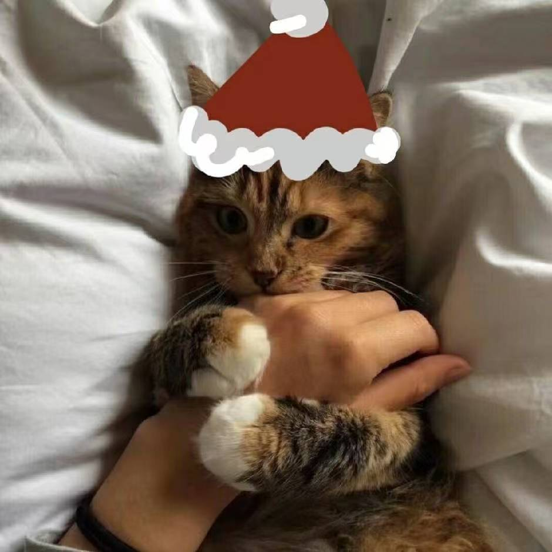

Derrick Liu
日拱一卒，功不唐捐。

像一面风旗，把住一些把不住的事体。
你好，我是 Derrick。欢迎来到我的个人主页。
我把论文阅读、技术实践和日常想法记录在博客里。最近的阅读涉及三维生成与网格表示，也会整理时间序列预测等方向的学习笔记，记录自己对问题、方法和实现细节的理解。
在代码实践方面，我整理了计算机系统导论实验中的学习过程，包括位运算、汇编与 GDB 调试。相关记录和代码可以在下方的 projects 中找到。
学习之外，我也喜欢古典音乐，偶尔写一些音乐会现场的听感与乐评。欢迎通过邮件交流。